# 对象 (object)
JavaScript 对象是拥有
属性和方法的数据Object 是 JavaScript 的一种数据类型。它用于存储各种
键值集合和更复杂的实体objects 可以通过
Object() 构造函数或者使用对象字面量的方式创建// 通过 Object () 构造函数 创建对象let obj1 = new Object() // 创建空对象
let obj2 = new Object(value)// 不允许传多个 value
// 对象字面量的方式创建let obj = {
"use-name": "why", // 带特殊符号的属性名必须加引号
age: 18,
computed: function() {
console.log("hello")
}}对象中的属性名或者方法名默认是
字符串形式相同属性名或者方法名会覆盖
访问对象的属性和方法
let obj = {
name: "why",
birth: 2000,
age: 18
computed: function() {
console.log("hello")
}}console.log(obj.name)
let age = "birth"
console.log(obj[age]) // 2000 通过变量访问
console.log(obj["age"]) // 18
# for...in
专门用于遍历对象，数组也属于对象，也可以遍历数组
只能遍历可枚举属性
// 遍历对象for(let attr in obj) {
//attr 是属性名}// 遍历数组for(let i in arr) {
//i 是数组下标}
# delete
delete 运算符可以删除对象的属性。如果对象包含该属性，那么该属性就会被删除
访问 js 对象中不存在的属性时，会得到 undefined 值，调用 js 对象中不存在的方法时会报错
delete obj.usname
# String
String 是一个构造函数，构造函数是一种创建对象的特殊函数，需要搭配 new 运算符使用
创建 String 对象
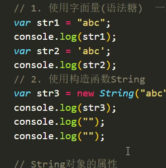
String 对象的属性
- 在 JavaScript 中，String 对象只有一个属性，那就是
length属性。它返回字符串的长度（字符长度，不是字节长度）
- 在 JavaScript 中，String 对象只有一个属性，那就是
String 对象的方法
String 对象的方法，调用以后，都会返回一个新字符串，不会影响原字符串
String 对象的方法中使用的索引号是从 0 开始计算的
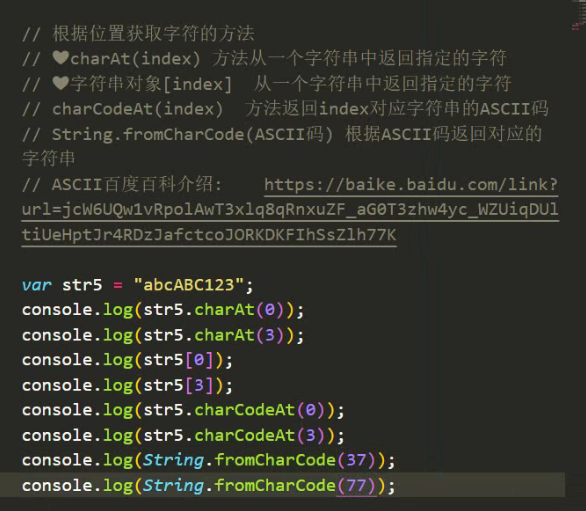
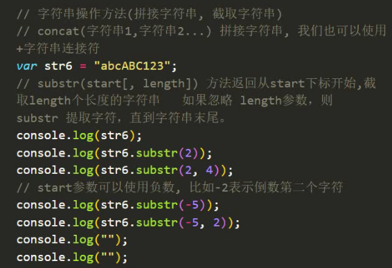
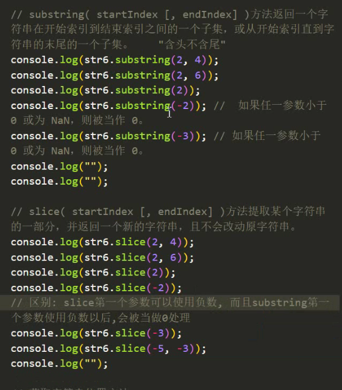
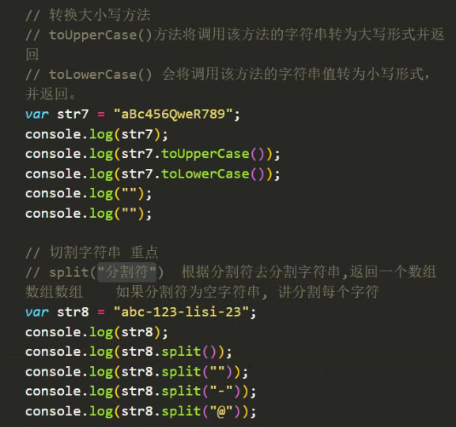
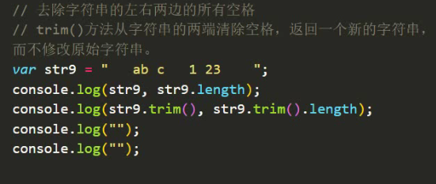
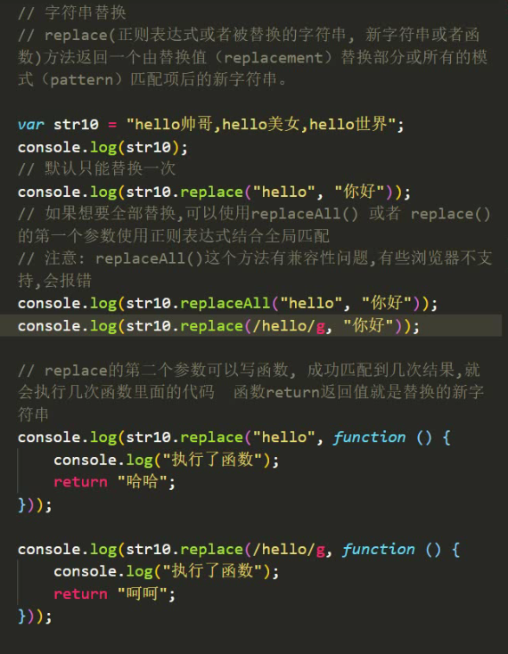
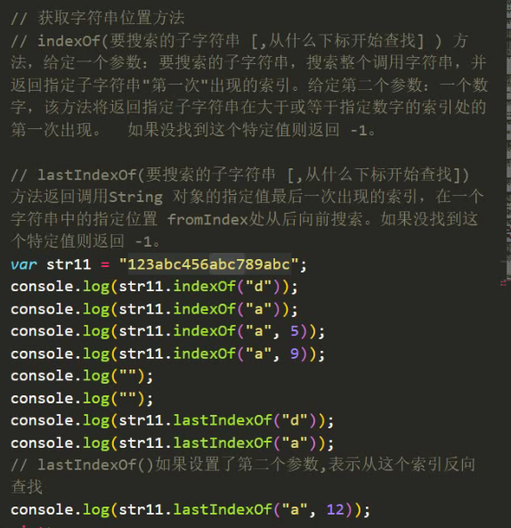
String 对象的 includes () 方法
- includes (searchString, position)：表示是否在原字符串中找到了参数字符串，position 是可选的，表示从哪个位置开始搜索，默认为 0。
String 对象的 startsWith () 方法
- 表示参数字符串是否在原字符串的头部，position 是可选的，表示从哪个位置开始匹配，默认为 0。
String 对象的 endsWith () 方法
- 表示参数字符串是否在原字符串的尾部，position 是可选的，表示前 n 个字符，默认为原字符串的长度。
let s = "Hello world!";
console.log(s.includes("Hello")); // true
console.log(s.startsWith("world", 6)); // true
console.log(s.endsWith("!", 12)); // true
String 对象的 repeat () 方法
repeat () 方法是用来复制字符串指定次数并返回一个新字符串的。
repeat (count)：表示要复制的次数，必须是一个非负整数，否则会抛出 RangeError 异常。
返回值：返回一个包含原字符串重复 count 次的新字符串。
let s = "Hello";
console.log(s.repeat(3)); // "HelloHelloHello"
console.log(s.repeat(0)); // ""
console.log(s.repeat(1.5)); // "Hello"，小数会被取整
console.log(s.repeat(-1)); // RangeError: repeat count must be non-negative
String 对象的 padStart ()、 padEnd () 方法
这些方法都是用来在字符串的开头或结尾填充另一个字符串，以达到指定的长度的。
padStart (targetLength, padString)：表示在原字符串的开头填充 padString，直到达到 targetLength 的长度，如果 padString 太长，会被截断，如果 targetLength 小于原字符串的长度，会返回原字符串。
padEnd (targetLength, padString)：表示在原字符串的结尾填充 padString，直到达到 targetLength 的长度，如果 padString 太长，会被截断，如果 targetLength 小于原字符串的长度，会返回原字符串。
let s = "Hello";
console.log(s.padStart(10, "*")); // "*****Hello"
console.log(s.padEnd(10, "-")); // "Hello-----"
console.log(s.padStart(3, "0")); // "Hello"
console.log(s.padEnd(10)); // "Hello "
# Date 日期对象
创建 Date 对象
let time = new Date() // 获取当前时间
let time2 = new Date(2000000) // 可以传入毫秒，传入后会返回相应时间
let time3 = new Date("2023-3-9") // 可以传入日期，传入后会返回相应时间
let time4 = new Date("2023-3-9 8:05:12")
let time5 = new Date("2023/3/9")
let time6 = new Date(2023, 8, 15, 10, 8, 2, 100) // 传入日期时，月份从 0 开始算
let time7 = new Date("8:05:12") // 只传时间不传日期会返回 Invalid Date
let time = new Date().getTime() // 获取时间戳（转毫秒数）
Date 对象的方法
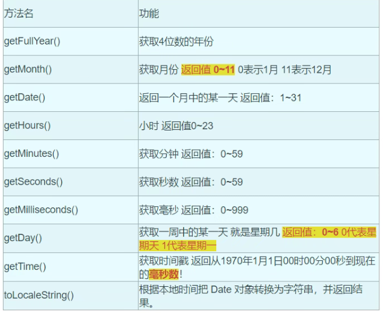
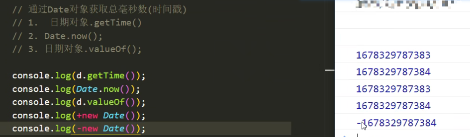
- toLocaleString () 转化日期输出格式
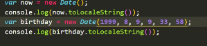
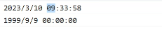
# Array 对象
创建 Array 对象 定义数组
let arr1 = []
let arr2 = [
10,
20,
{name: "why"
}]let arr3 = new Array()
检测是否为 Array
Array.isArray([10, 20, 30]) // 检测是否为数组，是就返回 true，不是返回 false
Array 对象的属性
arr.length // 获取数组长度
数组添加和删除元素方法
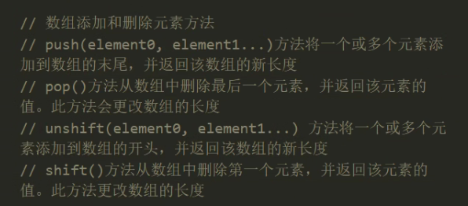
合并数组方法
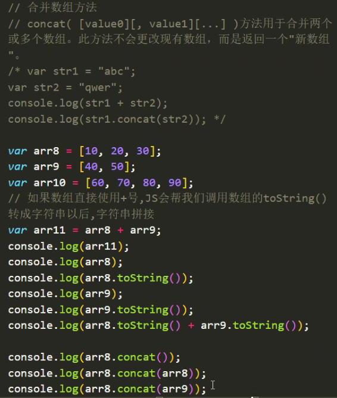
数组索引方法
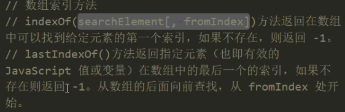
数组转换为字符串
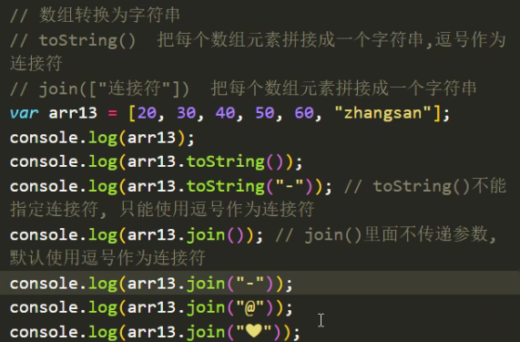
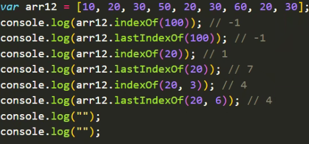
数组排序方法
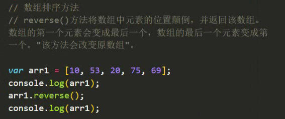
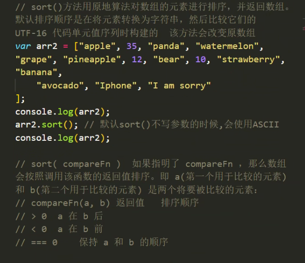
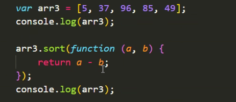
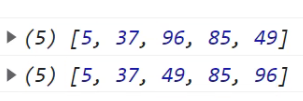
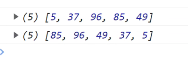
截取数组
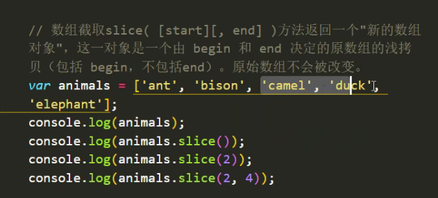
数组删除
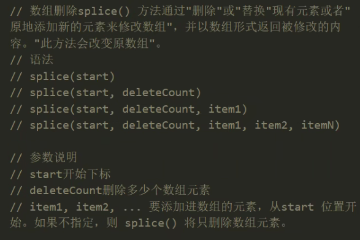
清空数组所有元素的两种方式
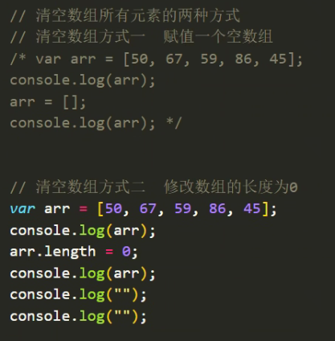
数组遍历 forEach ()
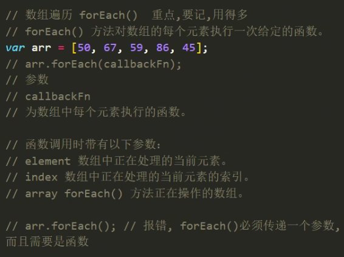
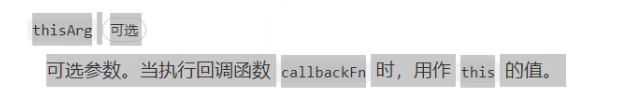
数组过滤 filter ()
在 JavaScript 中，
filter()方法允许我们通过一个数组进行过滤 - 遍历现有值，并仅返回符合某些条件的值到一个新数组中。filter()函数针对数组中的每个条目运行条件表达式。如果此条件计算为真，则将元素添加到输出数组中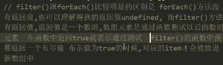
// 下面是一个 filter () 的例子，它创建一个新数组，其中包含大于等于 10 的元素：function isBigEnough(value) {
return value >= 10;
}var filtered = [12, 5, 8, 130, 44].filter(isBigEnough);
// filtered is [12, 130, 44]逐一处理 map ()
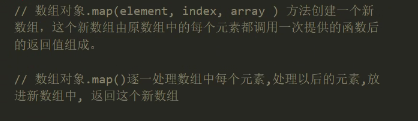
# Number 对象
创建 Number 对象
console.log(123)
console.log(-123)
console.log(new Number(123))
Number 对象.toFixed (digits)
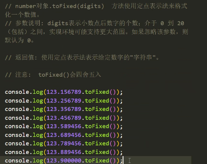
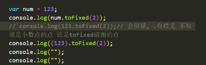
# 变量的数据类型转换
强制转换 (显示转换)
变量的数据类型转换，就是变量的数据类型从一种转换成另个数据类型
- bar.toString()
- 注意:・
null和undefined是没 有 toString () 方法，需要用 String ()
- 注意:・
- String(bar)
- Number(bar)
- Boolean(bar)
- 只有
false，0，null，undefined这几个值，转成布尔类型的时候是false，其他都是true
- 只有
let a = "123"
console.log(Number(a))
- bar.toString()
隐式转换 (自动转换)
- 强制转换就是使用一些 JS 内置函数进行数据类型转换
- 自动转换是 JS 根据上下文环境，把当前数据类型转换成适合
数据类型 - 小结：只要是在字符串中含有非数字的都会转换为
NaN;
# 数字的进制
- 十进制 0,1,2,3,4,5,6,7,8,9 逢十进一
- 注意：十进制可以以 0 开头，后面接其他 h 进制数字，但是假如下一个接的十进制数字小于 8，那么该数字将会被当做八进制处理。
- 二进制 0,1 逢二进一
- 二进制数字语法是以零为开头，后面接一个小写或大写的英文字母 B (日 b 或者是 0B)。假如 Bb 后面的数字不是 e 或者 1，那么就会提示语法错误。
- 八进制 0,1,2,3,4,5,6,7 逢八进一
- 八进制数字语法是以 e 为开头的。假如 0 后面的数字不在 0 到 7 的范围内，该数字将会被转换成十进制数字
- 十六进制 0,1,2,3,4,5,6,7,8,9,a,b,c,d,e,f 逢十六进
- 备注：进制之间转换可以使用 toString 方法，把指定数值转成指定进制字符串，toString () 方法返回的结果是一个字符串
- Number 对象.toString (进制)
# parseFloat () 方法
- parseFloat (要转换的变量) 函 数解析一个参数 (必要时先转换为字符串) 并返回一个浮点数，parseFloat () 从字符串中提取小数 将字符串转换为 number 类型，parseFloat () 从一个字符串提取小数如果第一个字符不是数字会得到 NaN，如果是会进行提取
- 提取规则：如果遇到了除了第一个
.以外的非数字就会停止提取
# parseInt () 方法
- parseInt (string [, radix] ) 解析一个字符串并返回指定基数的十进制整数，radix 是 2-36 之 间的整数，表示被解析字符串的基数，也就是进制数。
- 如果 parseInt () 的第一个参数不是一个字符串，则将其转换为字符串 (使用 toString () 抽象操作)。
# isNaN()
- 判断是否为数字
isNaN(变量名)如果是 NaN 就返回 true 如果不是 NaN 的就是 false- 注意:isNaN 会先将一个变量的数据类型自动的转换为 Number 类型，如果是 NaN 就会得到 true 如果是一个数字的话就是得到 false
- js 中 NaN 不等于 NaN， “NaN 代表 非数字值的 "特殊值"。 该属性用于指示某个值不是数字。这个非数字可以是不同的数字，因此 NaN 不等于 NaN。
# 引用（深浅拷贝）
<!DOCTYPE html> | |
<html lang="en"> | |
<head> | |
<meta charset="UTF-8"> | |
<meta http-equiv="X-UA-Compatible" content="IE=edge"> | |
<meta name="viewport" content="width=device-width, initial-scale=1.0"> | |
<title>Document</title> | |
</head> | |
<body> | |
<script> | |
// 引用 (深浅拷贝) | |
// 概念： 变量并不实际存储对象。变量存储指向对象的引用。引用就像指针，是对象的存储地址：换句话说，变量并不存储对象本身，而是存储类似于指针的东西。在 JavaScript 中，但我们需要知道，当对象赋值给变量时它肯定指向相应的对象。当我们使用属性与方法时，JavaScript 将负责根据引用获取对象并访问其属性。 | |
// 例子：基本数据类型与引用数据类型的区别 | |
// 基本数据类型 (string,number,boolean,null,undefined) 的变量之间赋值操作 互不相干 | |
var a = 10; | |
var b = a; // 把 a 变量的值赋值给 b 变量 | |
console.log("a=>", a); // 10 | |
console.log("b=>", b); // 10 | |
// 修改 a 变量的值 | |
a = 20; | |
console.log("a=>", a); // 20 | |
console.log("b=>", b); // 10 | |
// 修改 b 变量的值 | |
b = 5; | |
console.log("a=>", a); // 20 | |
console.log("b=>", b); // 5 | |
console.log(""); | |
console.log(""); | |
// 引用数据类型 (object, array) 的变量之间赋值操作 同生共死 | |
var obj1 = { | |
id: 1, | |
name: "zhangsan" | |
} | |
var obj2 = obj1; // 把 obj1 变量赋值给 obj2, 但是由于变量实际不存储对象本身，而是保存对象对应的对应地址 地址上面保存的才是值 | |
console.log("obj1=>", obj1); | |
console.log("obj2=>", obj2); | |
// 修改 obj2 的 id 属性 | |
obj2.id = 123; | |
console.log("obj1=>", obj1); | |
console.log("obj2=>", obj2); | |
// 给 obj1 添加属性 | |
obj1.sex = "男"; | |
console.log("obj1=>", obj1); | |
console.log("obj2=>", obj2); | |
// 删除 obj2 的 name 属性 | |
delete obj2.name; | |
console.log("obj1=>", obj1); | |
console.log("obj2=>", obj2); | |
console.log(""); | |
console.log(""); | |
/* var arr1 = [10, 20, 30]; | |
var arr2 = [10, 20, 30]; | |
console.log("arr1=>", arr1); | |
console.log("arr2=>", arr2); | |
arr1[0] = 100; | |
arr2[1] = 222; | |
console.log("arr1=>", arr1); | |
console.log("arr2=>", arr2); */ | |
var arr1 = [10, 20, 30]; | |
var arr2 = arr1; // 把 arr1 赋值给 arr2, 建立引用 数组也属于对象的一种 | |
console.log("arr1=>", arr1); | |
console.log("arr2=>", arr2); | |
arr1[0] = 100; | |
arr2[1] = 222; | |
console.log("arr1=>", arr1); | |
console.log("arr2=>", arr2); | |
arr2.push(666, 777, 888); | |
console.log("arr1=>", arr1); | |
console.log("arr2=>", arr2); | |
arr1.shift(); | |
console.log("arr1=>", arr1); | |
console.log("arr2=>", arr2); | |
</script> | |
</body> | |
</html> |
# 深浅拷贝问题
<!DOCTYPE html> | |
<html lang="en"> | |
<head> | |
<meta charset="UTF-8"> | |
<meta http-equiv="X-UA-Compatible" content="IE=edge"> | |
<meta name="viewport" content="width=device-width, initial-scale=1.0"> | |
<title>Document</title> | |
</head> | |
<body> | |
<script> | |
// 例子：基本数据类型与引用数据类型的区别 | |
var a = 1; | |
var b = a; | |
b++; | |
// 问 a 等于多少 | |
console.log("a=>", a); // 1 | |
console.log("b=>", b); // 2 | |
var c = { | |
num: 1 | |
} | |
var d = c; | |
d.num++ | |
// 问 c.num 等于多少 | |
console.log("c=>", c); | |
console.log("d=>", d); | |
// 解释： | |
// 上面的代码中 a 等于 1，而 c.num 等于 2。 | |
// 原因是： | |
//a 是基本类型所以将 a 赋值给 b 是一个 "深拷贝" 过程即会另外创造一个一模一样的值，"新值跟原值不共享内存"，修改新对象不会改到原对象，导致 b 修改并不会影响 a。 | |
// 而 c 是一个引用数据类型，将 c 赋值给 d 的操作是一个 "浅拷贝"，d 本身就只是一个 "指针地址"，d 只复制 c 指向某个对象的指针地址，而不复制对象本身，所以 "新旧对象还是共享同一块内存"。这时 d 与 c 是指向同一个对象 | |
// 值类型 (基本类型)：字符串（String）、数字 (Number)、布尔 (Boolean)、空（Null）、未定义（Undefined）、Symbol。 | |
// 注：Symbol 是 ES6 引入了一种新的原始数据类型，表示独一无二的值。 | |
// 引用数据类型（对象类型）：对象 (Object)、数组 (Array)、函数 (Function)，还有两个特殊的对象：正则（RegExp）和日期（Date）。 | |
// 深拷贝与浅拷贝的区别：如何区分深拷贝与浅拷贝，简单点来说，就是假设 B 复制了 A，当修改 A 时，看 B 是否会发生变化，如果 B 也跟着变了，说明这是浅拷贝；如果 B 没变，那就是深拷贝。 | |
</script> | |
</body> | |
</html> |
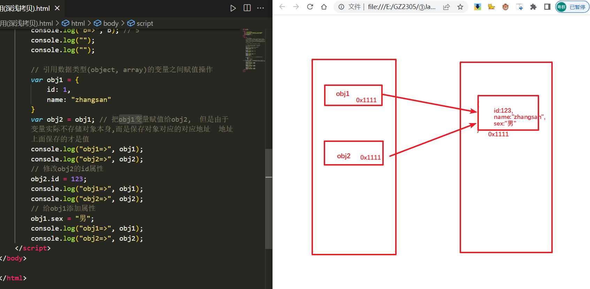
# 解除数组引用
浅拷贝方式
<!DOCTYPE html><html lang="en"><head><meta charset="UTF-8"><meta http-equiv="X-UA-Compatible" content="IE=edge"><meta name="viewport" content="width=device-width, initial-scale=1.0"><title>Document</title>
</head><body><script>
// 数组以及对象这两种引用数据类型，变量之间的赋值操作会出现引用问题// 解除数组引用，主要方式有以下两种，实现的是解决第一个层的引用，深层的引用解决不了// 第一种：创建一个新的空数组，通过遍历另一个数组，把另一个数组的数组元素添加到新数组中// 第二种：通过一些数组内置方法，这些方法需要可以返回新数组的方法 比如 concat () slice () filter () map () 等/* var arr1 = [10, 20, 30, [40, 50, 60], {id: 2,
name: "zhangsan"
}];
var arr2 = arr1;
console.log ("arr1=>", arr1);console.log ("arr2=>", arr2);arr1 [0] = 100;
arr1 [3][1] = "呜呜呜～";
arr2 [1] = 222;
arr2 [4].name = "lisi";
console.log ("arr1=>", arr1);console.log ("arr2=>", arr2); *//* var arr1 = [10, 20, 30, [40, 50, 60], {id: 2,
name: "zhangsan"
}];
var arr2 = [];
for (var i = 0; i < arr1.length; i++) {arr2.push (arr1 [i]);
}
console.log ("arr1=>", arr1);console.log ("arr2=>", arr2);arr1 [0] = 100;
arr1 [3][1] = "呜呜呜～";
arr2 [1] = 222;
arr2 [4].name = "lisi";
console.log ("arr1=>", arr1);console.log ("arr2=>", arr2); *//* var arr1 = [10, 20, 30, [40, 50, 60], {id: 2,
name: "zhangsan"
}];
//var arr2 = arr1.concat ();
//var arr2 = arr1.slice ();
//var arr2 = arr1.filter (function () {// return true;
// });
var arr2 = arr1.map (function (item) {return item;
});
console.log ("arr1=>", arr1);console.log ("arr2=>", arr2);arr1 [0] = 100;
arr1 [3][1] = "呜呜呜～";
arr2 [1] = 222;
arr2 [4].name = "lisi";
console.log ("arr1=>", arr1);console.log ("arr2=>", arr2); */</script></body></html>Object.assign () 方法（浅拷贝）
<!DOCTYPE html><html lang="en"><head><meta charset="UTF-8"><meta http-equiv="X-UA-Compatible" content="IE=edge"><meta name="viewport" content="width=device-width, initial-scale=1.0"><title>Document</title>
</head><body><script>
// 把旧对象进行 "浅拷贝" 到新对象中 Object.assign (目标对象，源对象 1, 源对象 2..) 方法将所有可枚举（Object.propertyIsEnumerable () 返回 true）的自有（Object.hasOwnProperty () 返回 true）属性从一个或多个源对象复制到目标对象，返回修改后的对象。 合并多个对象属性到目标对象中，如果相同属性名会覆盖var obj1 = {
id: 1,
name: "zhangsan"
};
var obj2 = {
id: 2,
age: 23,
hobby: ["抽烟", "喝酒", "烫头"]
};
var obj3 = {
sex: "男",
data: {
friends: ["lee", "Tom", "Jane"],
mother: "韩梅"
}}console.log(obj1);
console.log(obj2);
console.log(obj3);
console.log("");
Object.assign(obj1, obj2, obj3);
console.log(obj1);
console.log(obj2);
console.log(obj3);
// Object.assign () 返回值是目标对象。var obj4 = Object.assign(obj1, obj2, obj3);
console.log(obj1);
console.log(obj2);
console.log(obj3);
console.log(obj4);
console.log("");
console.log("");
obj4.id = 3;
obj4.name = "lisi";
obj4.age = 24;
obj4.hobby[1] = "小麦果汁";
obj4.data.mother = "马什么梅";
console.log(obj1);
console.log(obj2);
console.log(obj3);
console.log(obj4);
</script></body></html>
# 深拷贝
深拷贝简单方式：
JSON.parse (JSON.stringify (对象或者值))
该方式不能拷贝对象中的方法以及属性值为 undefined 的属性
<!DOCTYPE html><html lang="en"><head><meta charset="UTF-8"><meta http-equiv="X-UA-Compatible" content="IE=edge"><meta name="viewport" content="width=device-width, initial-scale=1.0"><title>Document</title>
</head><body><script>
var arr1 = [10, 20, 30, [40, 50, 60], {
id: 2,
name: "zhangsan"
}];
var obj1 = {
name: "小明",
age: 19,
address: "北京",
hobby: ["抽烟", "喝酒", "烫头"],
data: {
friends: ["lee", "Tom", "Jane"],
mother: "韩梅"
},
sex: undefined,
sayHello: function () {
console.log("hello");
}};
// 深拷贝简单方式 JSON.parse (JSON.stringify (对象或者值) )// JSON.stringify (js 对象或者值) 方法将一个 JavaScript 对象或值转换为 JSON 字符串 返回值 JSON 字符串// JSON.parse (要被解析成 JavaScript 值的字符串) 方法用来解析 JSON 字符串，构造由字符串描述的 JavaScript 值或对象。 返回值 Object 类型，对应给定 JSON 文本的对象 / 值。/* console.log(arr1);console.log(JSON.stringify(arr1));
console.log(JSON.parse(JSON.stringify(arr1)));
console.log("");console.log("");console.log(obj1);
console.log(JSON.stringify(obj1));
console.log(JSON.parse(JSON.stringify(obj1))); */
var arr2 = JSON.parse(JSON.stringify(arr1));
console.log(arr1);
console.log(arr2);
arr1[0] = 100;
arr2[1] = 222;
arr1[3][0] = 444;
arr2[4].id = 256;
console.log(arr1);
console.log(arr2);
console.log("");
console.log("");
var obj2 = JSON.parse(JSON.stringify(obj1));
console.log(obj1);
console.log(obj2);
obj1.name = "小红书";
obj2.age = 21;
obj1.hobby[0] = "吸烟";
obj2.data.mother = "马冬梅";
console.log(obj1);
console.log(obj2);
// 注意: JSON.parse (JSON.stringify ()) 该方式不能拷贝对象中的方法以及属性值为 undefined 的属性</script></body></html>
自己封装一个深拷贝函数：
<!DOCTYPE html><html lang="en"><head><meta charset="UTF-8"><meta http-equiv="X-UA-Compatible" content="IE=edge"><meta name="viewport" content="width=device-width, initial-scale=1.0"><title>Document</title>
</head><body><script>
// 自己封装一个深拷贝函数function deepCopy(obj) {
//obj 形参就是需要被拷贝的对象// 判断是否为对象，如果不是对象，那么就不需要进行深拷贝if (typeof obj !== "object") {
return;
}// 判断 obj 的值是否为 nullif (obj === null) {
return;
}// 判断是否为数组，如果为数组，则创建新的空数组；如果不是数组，则创建新的空对象var newObj = Array.isArray(obj) ? [] : {};
// 使用 for...in 遍历 objfor (var attr in obj) {
// 如果 obj [attr] 又是一个对象类型，那么我们再次进行 deepCopy () 调用if (typeof obj[attr] === "object") {
newObj[attr] = deepCopy(obj[attr]);
} else {
// 往 newObj 中添加属性newObj[attr] = obj[attr];
}}// 返回 newObj 变量return newObj;
}var obj1 = {
name: "小明",
age: 19,
hobby: ["抽烟", "喝酒", "烫头"],
data: {
mother: "韩梅"
},
sex: undefined,
sayHello: function () {
console.log("hello");
},
sayHi: function () {
console.log("hi");
}};
var obj2 = deepCopy(obj1);
console.log("obj1=>", obj1);
console.log("obj2=>", obj2);
obj1.name = "小红";
obj2.age = 20;
obj1.hobby[1] = "喝茶";
obj2.data.mother = "马冬梅";
obj2.data.father = "夏洛";
console.log("obj1=>", obj1);
console.log("obj2=>", obj2);
</script></body></html>